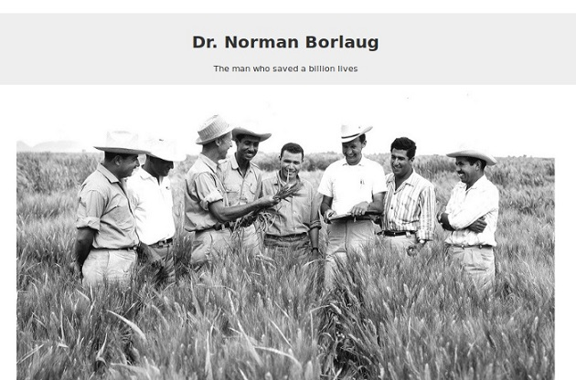

Dev Practical
Receive new content in your inbox
I send out an email when I create something new. Never any spam, easily unsubscribe any time.
HTML PROJECTS: Tribute Page
Status
Knowledge required: HTML only
Difficulty: Beginner friendly.
Estimate project completion time: 2 hours
Skill focus of the project
Some of the HTML skills that you will practice while doing this project are:
Adding different types of text to a web page. You will be practicing using text types like headings, lists, and links.
Changing emphasis on text using bold and italics.
Embedding an image on a web page and adding image captions.
Main components of tribute page
You must include the following parts in your completed project:
You must include a title or heading on the tribute page.
You should include an image on the tribute page.
You included image must have a caption.
You should include a timeline of the life of the tribute in the form of a list.
The final project should look like this:
You can read the detailed technical requirements of the tribute page and tests you are required to pass on FreeCodeCamp.
Bonus practice
Create a html Wikipedia page clone.

Create a html only Youtube page clone.
Create a HTML-only Google Search Result page
Create a HTML-only Google Search Result page
Where to publish your work
Codepen
Codepen is the easiest one to setup. You just need an account to begin with. Then create a new pen and copy paste your HTML code there.
Github
This one takes time to setup. However, you can use the Github.com web based editor to upload or copy paste your HTML.
Then you need to go to the repository setting to enable the projects to be viewed on (your-username).github.io/(repository-name).
If you are still stuck on what to do for your first HTML project, checkout my step by step create your first HTML web page.
Examples of Tribute pages
FreecodeCamp Example Project Link View screenshot
Fiona Apple’s Tribute PageProject Link View screenshot
Andriy Kuzmenko’s Tribute Projec Project Link View screenshot
Mahatma Gandhi’s Tribute page Project Link View screenshot
Steve Job’s Tribute Page Project Link View screenshot
Newsletter
I send out an email when I create something new. Never any spam, easily
Copyright © 2020 DevPractical. All rights reserved.


{kind=link}
{kind=link}